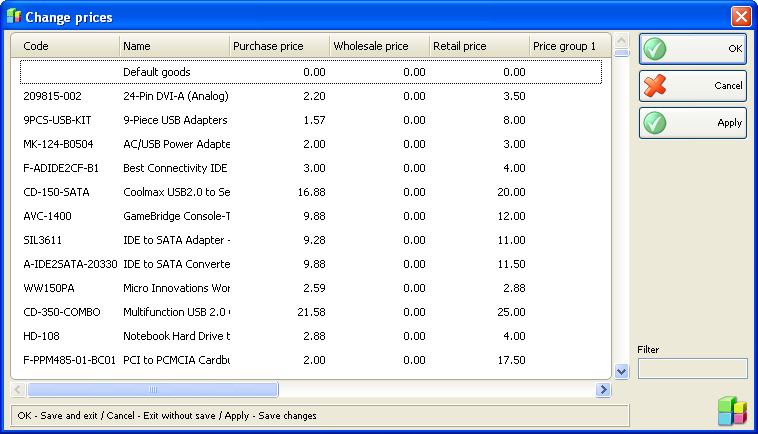

Modificare preturi
Folositi fereastra Modificare preturi (shortcut taste Ctrl+R) pentru introducere sau editare preturi In toate grupele. Preturile introduce vor fi aceleasi pentru toate localizarile. Grupele de pret diferite se refera la clienti, pentru care o grupa de pret a fost definita. Implicit se vor aplica clientilor Preturile de desfacere daca nu exista nici un grup de pret definit.

Click pe butonul Aplica pentru salvarea modificarilor. Click Cancel pentru iesire fara salvare modificati.
�2006-2012 Microinvest, All rights reserved